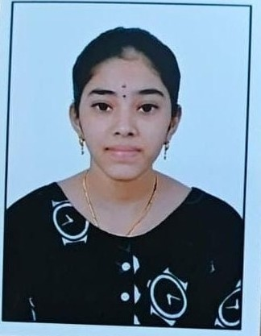

Aspiring Web Developer

I am a Computer Science student passionate about web development. I enjoy building simple and user-friendly web applications. Currently learning HTML, CSS and JavaScript through internship projects.
B.Tech Computer Science and Engineering (Cloud Computing)
Currently pursuing my degree and developing skills in programming and web development.
Mathman English medium High School
10th Grade: 90.3% - State Board Of Andhra Pradesh
Sri Sarada Educational Institutions
12th Grade: 86.8% - Board Of Intermediate Andhra Pradesh
A system developed to manage hospital operations such as patient records, appointments, and administration.
A program that secures files using encryption techniques and allows safe decryption.
A task management application that allows users to create, update, and delete daily tasks.
A booking application designed to help users find and reserve accommodation easily.
A system for managing and calculating student marks and performance.
A program that checks whether a given word or phrase is a palindrome.
A personal portfolio website showcasing my skills, projects and contact information.
Email: sruthidivakarla2007@gmail.com
linkedin: https://www.linkedin.com/in/sruthi-divakarla-206b81332
GitHub: https://github.com/SruthiD-05